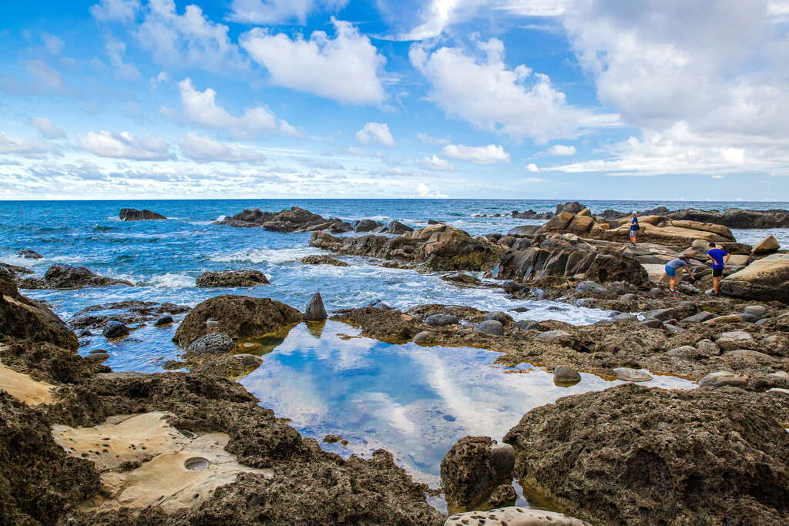
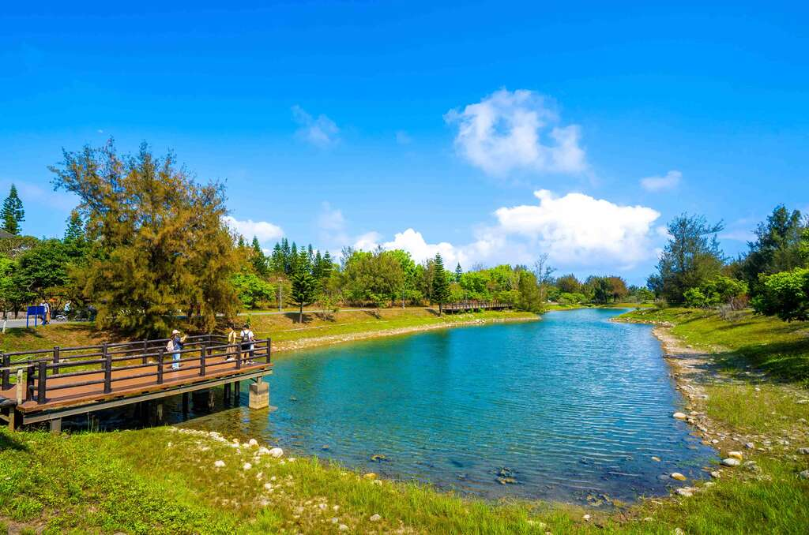

探索台東
台東位於台灣東部，是一個充滿原始自然美和文化特色的地方。以下是台東著名的景點：

伯朗大道
伯朗大道的正式名稱為錦新三號道路，筆直的道路上兩旁盡是遼闊翠綠的稻田，隨著時間轉為金黃，阡陌的黃色稻浪，再加上遠方高低起伏的山巒，宛如明信片上的美麗照片。 在這片無邊無際的稻田中騎單車、散步，讓人遠離城市的喧囂，放鬆身心，沉浸在這番美景中。
鹿野高台
全台知名兩處飛行傘基地，一是位於新北市萬里區能夠鳥瞰壯闊海景的萬里飛行傘基地，另一處則是有著花東縱谷最佳暸望台之稱的「鹿野高台」，推動飛行傘運動已逾十年的鹿野高台，擁有廣達7.4公頃的飛行傘體驗場以及占地5公頃的專屬降落場，每每吸引眾多喜愛高空飛翔的同好前往。

富岡地質公園
富岡地質公園位於富岡漁港北方的海域，是東部海岸最南端的風景據點，因為地形和岩石在種類上，與北部的野柳外貌相似，因此又被稱為「小野柳」。此區地質屬富岡砂岩，有砂岩、泥岩互層的現象，上層覆蓋珊瑚礁岩，礁岩群曲折迷離，岩上並有蔓榕生長，景觀十分特殊。天氣晴朗時，從富岡地質公園向東望去，可以清楚地看見約33公里外的綠島，以及由富岡漁港出航前往綠島、蘭嶼的交通船。富岡地質公園設有遊客中心、露營區、賣店、公廁、涼亭、步道等，設施友善通用，在此彷彿配合海的律動和藍天的變化，形成驚人的自然景觀，是賞奇岩、坐臥沉思、觀海聽浪、看寄居蟹玩耍的好去處！

臺東森林公園
臺東森林公園是一大片面積遼闊的木麻黃防風保安林地，由於木麻黃顏色較深，遠遠望去林相黝黑，因此又稱為黑森林。臺東縣政府將黑森林與海濱公園綠意連成一片，規劃而成一處市區森林公園，連串的綠地，成為臺東市區最大型的公園，以及鄰近海域最完整的生態區，是運動休閒的最佳場所，也是臺東市近郊炙手可熱的遊憩景點。